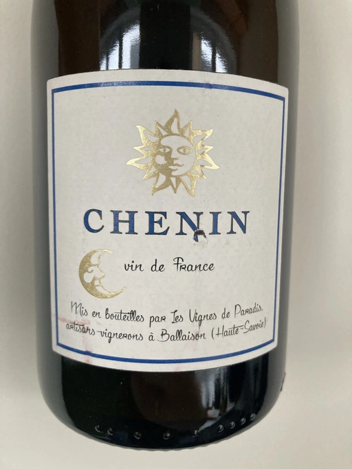

- Type
- White Still, Dry
- Producer
- Les Vignes De Paradis
- Vintage
- 2019
- Location
- France, Vin de Table
- Grapes
- Chenin Blanc
- Alcohol
- 13
- Sugar
- 1.1
- Price
- 607 UAH
- Cellar
- N/A
Producer
Dominique Lucas is a 5th generation winemaker who migrated from his native Burgundy, frustrated with the region’s reliance on chemicals. He is focused on making Chasselas in the Savoie that stands with the best white wines of France. Les Vignes de Paradis is located on the shores of Lake Geneva (Lac Leman).
His vines are separated into 27 parcels of different soil composition. All are harvested by hand. Most of them are Chasselas, but he also has tiny parcels of Savagnin, Pinot Gris, Gamay, Chardonnay and Chenin Blanc. These are not old vines, but in the right hands…
Ratings
2022-06-21 - 7.40
An interesting and aromatic wine with its issues that spoil the pleasure. On the good side, we have notes of sea breathe, quince and pear. Salty palate with flavours of quince jam, and sea breathe. Together with apparent ageing on lees in the form of biscuit notes, it creates a good impression. On the other hand, it is bland and has long and off-setting bitterness of apple seeds.
Wine #2 on A taste of Chenin Blanc event.